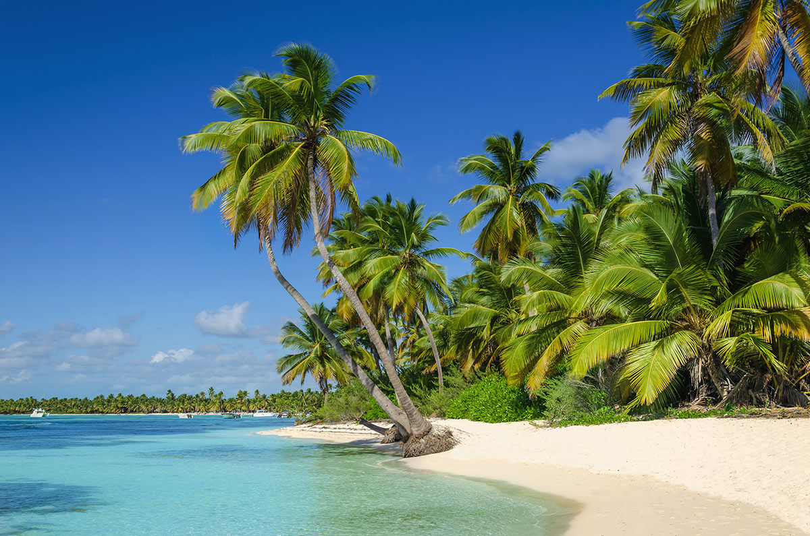

×

Costa Rica
История
В доколумбов период большую часть Коста-Рики заселяли уэтары и брибри.
Коста-Рика была открыта в 1502 году Христофором Колумбом во время его четвёртого путешествия в Америку. Испанская колонизация началась примерно с 1530 года.
Заселение испанцами и экономическое развитие этой колонии шло очень медленно, отчасти из-за трудностей с климатическими условиями страны, а также из-за набегов английских и голландских пиратов (поддерживаемыми властями Англии и Голландии), нападавших на испанцев с конца XVI века и вплоть до середины XIX века. Англичане также организовывали набеги в Коста-Рику индейцев-мискито (с восточного побережья нынешней Никарагуа). Кроме того, колонизаторы не имели стимула в связи с низким содержанием золота в землях покорённых индейцев.
В 1560—1570-е годы племена уэтаров и брибри не были ещё окончательно покорены испанцами. Территория западных уэтаров простиралась до тихоокеанского побережья, правителем у них был Гарабито (Гуарабито), а правителем восточных — Эль-Гуарко.
В XVI веке испанские поселенцы заселили Центральное плато Коста-Рики, где до этого, как впрочем и на всей территории страны, индейское население было малочисленно.
Бедность страны полезными ископаемыми и климатические условия привели к тому, что в Коста-Рике селились в основном бедные переселенцы из Испании, что привело к созданию не крупных плантаций (как в других колониях Испании в Америке), а мелких или средних хозяйств.
Правительство и политика
На данный момент действующий президент страны — Альварадо Кесада, Карлос (с 8 мая 2018).
Данные: Дата рождения 14 января 1980. Место рождения Сан-Хосе, Коста-Рика. Супруга Claudia Dobles Camargo.
На данный момент действующий вице-президент страны - Кэмпбелл, Эпси (с 8 мая 2018 года).
Данные: Дата рождения 4 июля 1963. Место рождения Сан-Хосе, Коста-Рика.
Праздники
| Дата | Праздник | Примечание |
|---|
| 1 января | Новый год | Начало календарного года |
| 11 апреля | День Хуана Сантамарии | День Хуана Сантамарии |
| 1 мая | День рабочего | В честь всех рабочих |
| 25 июля | День Гуанакасте | День Гуанакасте |
| 2 августа | День Ангельской Девы | День Ангельской Девы |
| 15 августа | День матери | День матери |
| 15 сентября | День независимости | С 1821 года |
| 25 декабря | Рождество | Празднование Рождества |
____